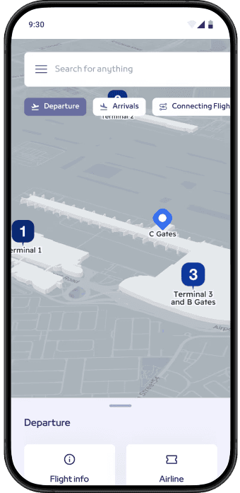
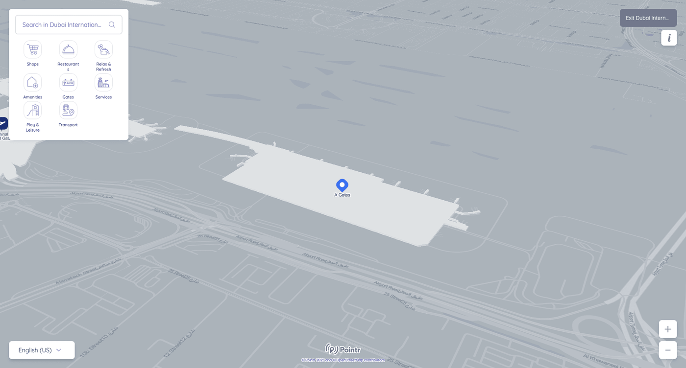
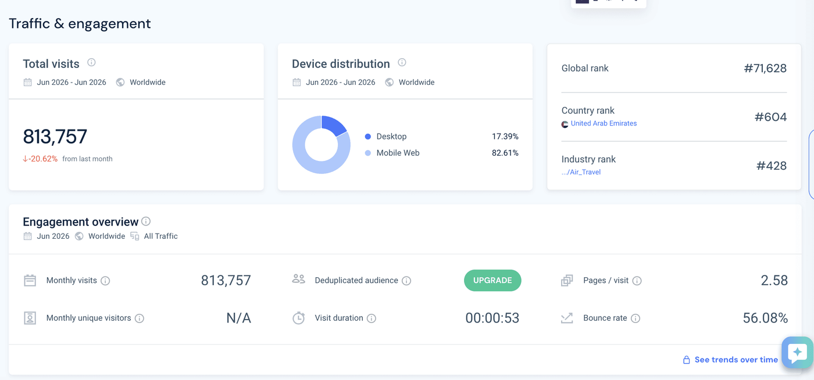
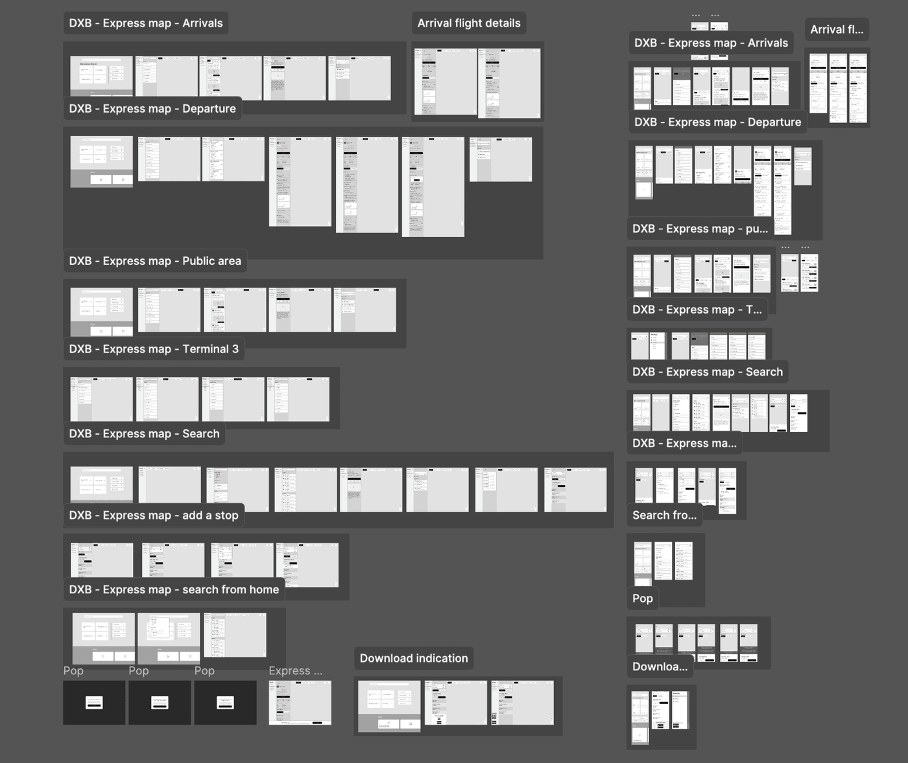
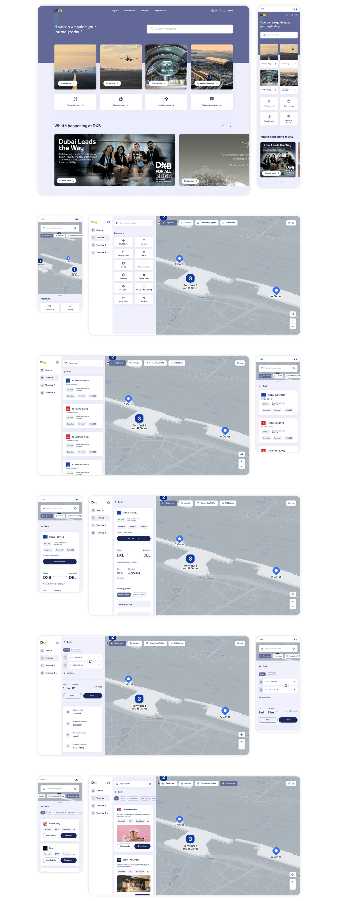

Kia
0 to 1: Launching Kia's first pickup in the Middle East
Led the end to end launch experience for Tasman, Kia's first Middle East pickup.

 Dubai Airports Case Study
Dubai Airports Case Study

DXB serves an average of 7.9 million travelers a month, based on 95.2 million annual passengers, making it the world's busiest airport by international traffic. At that scale, wayfinding isn't a nice to have, it's the difference between someone making their connection and someone missing it.
Most airport navigation is designed around the building rather than the traveler. A traveler who just landed and needs baggage claim is in a completely different mental state than someone connecting to a flight in forty minutes, and handing them the same map ignores that.
I restructured DXB's wayfinding around traveler intent rather than terminal geography, redesigning the experience for four distinct traveler types, arriving, departing, transiting, and connecting, each with a different urgency level and a different first question they need answered.
A look at the final design before we get into how it came together.
The existing experience had two core problems. It felt like a different product entirely, Google Maps and Apple Maps have set the standard for how digital maps feel and behave, and Express Maps didn't resemble either. For users navigating a high pressure environment like an airport, that unfamiliarity created friction at exactly the wrong moment.
The interaction layer was doing too much. Search results, category icons, filters, and information panels were all competing at the same visual weight. In a navigation context where users need to find something fast, visual competition slows everything down.

Before defining the structure, I looked at how travelers were actually reaching Dubai Airports' digital properties. Traffic data showed over 800,000 monthly visits, with the overwhelming majority, over 80 percent, on mobile. Average session length sat under a minute. That told me two things early: this had to work as a fast, glanceable mobile experience, not a desktop style information site, and travelers weren't browsing, they were looking something up and leaving.
From there I mapped four distinct traveler states, arriving, departing, transiting, and connecting, each with a different urgency level and a different question they needed answered first.


The Pointr map in the background was fixed. I had no control over the map's visual look and feel, its satellite view, its rendering style. My scope was everything users interact with on top of it, search, categories, results, selection states, transitions. That constraint made the work more focused, not less.
Research had established that Express Maps was serving several distinct audiences through one undifferentiated entry point. An arriving passenger needs baggage and exits. A departing passenger needs gates and check in. Someone meeting a traveler needs arrivals information. We added an intent selection step at the start so the experience could orient itself around what the user actually came to do rather than making them figure it out themselves.
Map elements were rebalanced so the most important information stood out immediately. Primary routes and key locations got stronger visual treatment. Secondary information receded. The goal was that a user looking for their gate could find it without scanning everything at equal weight.
Every interaction decision was made with familiarity in mind. Search behavior, result presentation, selection states, and transitions were all designed to feel like something users had used before. Reducing the learning curve in a high pressure navigation moment directly reduces cognitive load.
A wayfinding tool only works if people find it before they need it. During the work it became clear that Express Maps was hard to reach from the main Dubai Airports website, which meant users were often discovering it late or not at all. I raised this with the team and proposed changes to improve how the maps surfaced from the wider site, a problem sitting outside the brief but directly limiting the impact of everything inside it.

Users who had signed up for usability sessions were given the interactive prototype and a goal to complete. Participants were grouped by demographic, arriving, departing, transiting, and observed against journeys matching how they'd actually use the product. Testing against real intent rather than a generic task is what made the findings usable. Someone rushing to a gate behaves differently from someone waiting on an arrival, and the insights from each group fed back into the journey before launch.
Visual refinements across a navigation platform used by millions of commuters, visitors, and logistics users at one of the world's busiest airports. Route interpretation became faster, cross device readability improved, and cognitive load during navigation tasks was reduced by giving more important information stronger visual weight and letting secondary information recede.
An airport doesn't have one user. Treating departing, arriving, and transiting passengers as a single audience was the structural problem underneath the visual one.
The most impactful decisions were about what to remove rather than what to add. Restraint in a navigation context is a functional choice, not a stylistic one.
Working within constraints imposed by a third party platform focused the design effort. When you can't change the map, you get deliberate about everything on top of it.
Next Case Study
Led the end to end launch experience for Tasman, Kia's first Middle East pickup.